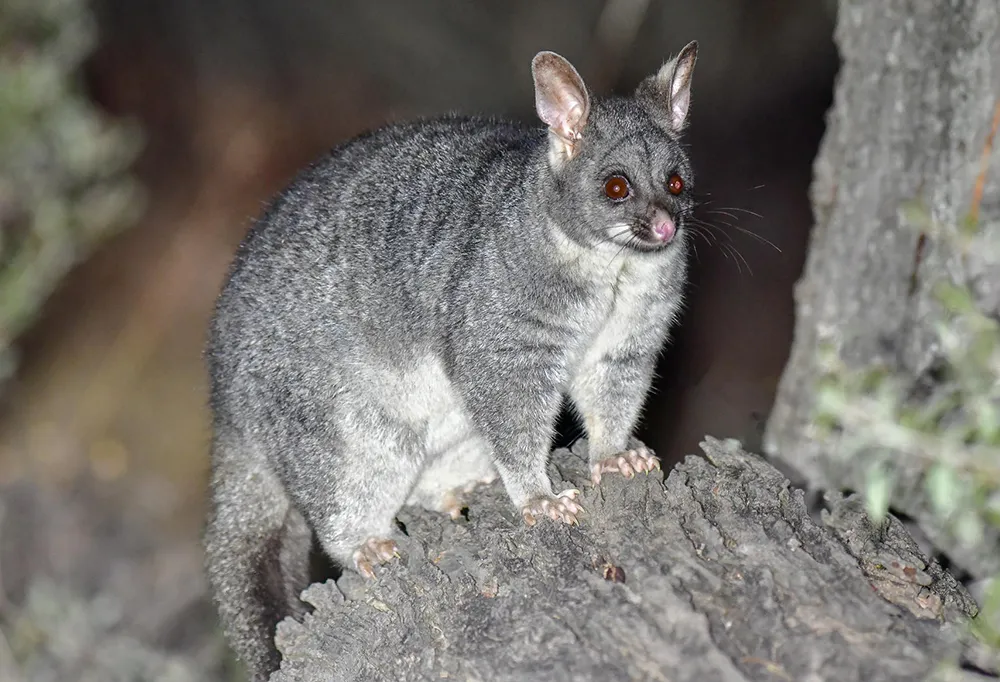
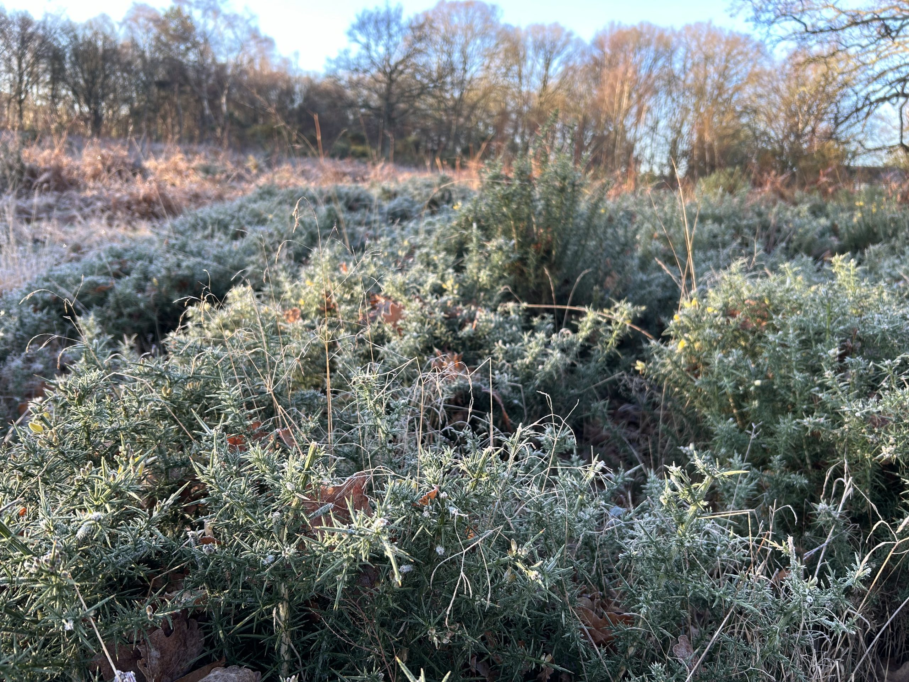
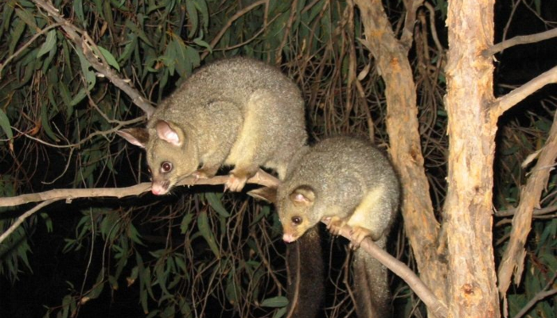
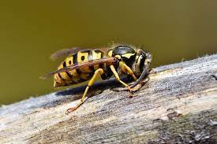
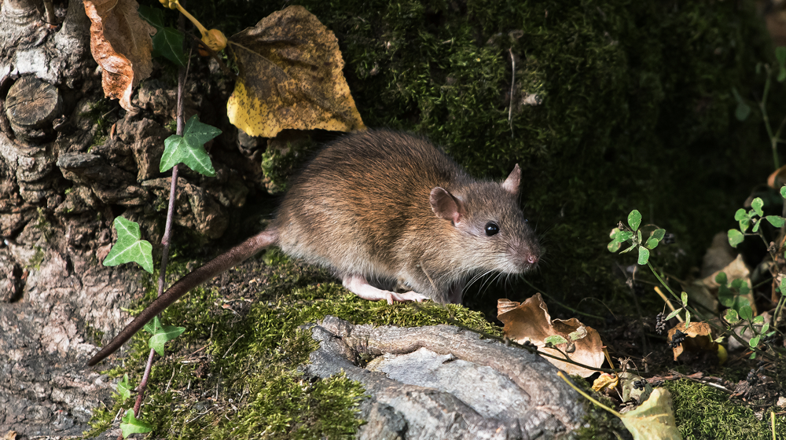
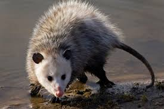
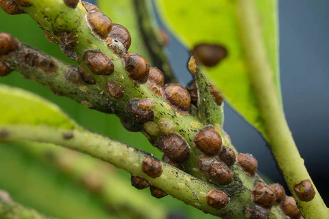
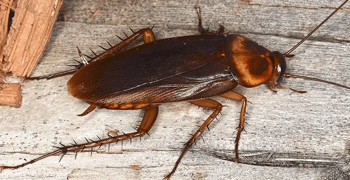

Pests in NewZealand are quickly becoming a more prominent and worrying issue for the biodiversity of our country. The main threats that pests pose to the biodiversity in New Zealand is that they destroy land, spread dangerous diseases and kill/harm our native wildlife such as, birds and plants.
Pests can take many different shapes and sizes, coming in all forms. However, in NZ there are a few main ones to be aware of. These include lots of mammals such as, possums, rats, stoats and ferryl cats. Although it may come as a surprise to some, the pests are not only animals. Many of our pests are plant based such as Kauri die back, which is a pathogen that kills our native kauri trees and gorse which overpowers and outcompetes native plantation.







Although pests are becoming a bigger problem there are ways to combat them. The first way is through hygiene. Making sure that the area is clean and that food scraps and other rubbish has all been delt with is very effective at dealing with rodents and cockroaches. The second way is by using physical control. You can put traps and bait in place to deal with any rodent type pests such as rats, stoats and possums. There are also certain types of mesh and wire that you can use to protect certain crops. Both of these strategies will lower the amount of pests, which means that there will be less predators to our native birds and more of our wildlife being kept safe.